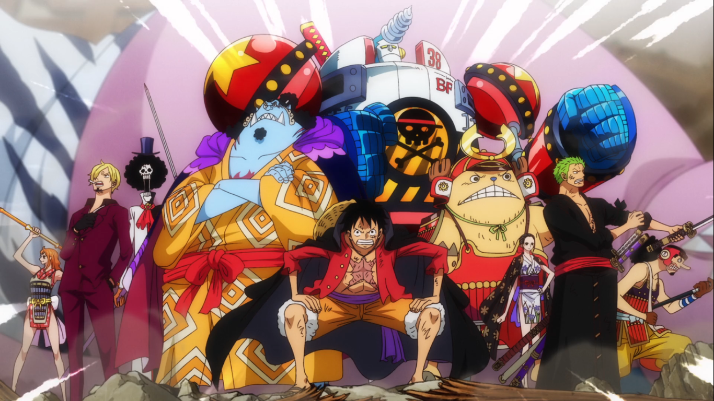

Los personajes están separados de acuerdo a los lugares donde residen, o grupo del que forman parte. Algunos de ellos han formado parte de más de un grupo, habiendo mención de ellos en los diferentes grupos a los que pertenecieron, y estando su información principal en el grupo del que forman parte actualmente.


Monkey D. Luffy es un personaje de ficción y el protagonista principal del manga One Piece creado por Eiichirō Oda. Es apodado por los demás como "Sombrero de Paja", debido a su característico sombrero que lleva desde niño. Su cuerpo está hecho de goma, debido a haberse comido la Fruta Goma Goma.
Nacimiento: 11 de noviembre
Roronoa Zoro, también conocido como "El Cazador de Piratas Roronoa Zoro", es uno de los personajes principales del manga One Piece. Fue el primer miembro en unirse a Luffy como tripulante, convirtiéndose en el combatiente de la tripulación, y uno de sus dos espadachines, siendo el otro Brook.
Nami es un personaje ficticio del manga One Piece. Ella es la navegante de los Piratas de Sombrero de Paja, el grupo protagonista de la historia.
Usopp, también antiguamente conocido por su alter ego "Sogeking", es un personaje del manga One Piece. Nació en el mar llamado East Blue. Fue el tercer miembro en unirse a la tripulación de Luffy y el segundo de forma oficial tras la confrontación que tuvieron con el capitán Kuro.
Sanji, nacido como Vinsmoke Sanji, es un personaje de la serie japonesa de manga One Piece. Es el cocinero de los Piratas de Sombrero de Paja. Fue el quinto miembro en unirse a la tripulación. Su sueño es encontrar el legendario mar All Blue. Es el único tripulante que proviene del North Blue.
Nacimiento: 24 de diciembre
Tony Tony Chopper, normalmente llamado Chopper y apodado "El amante del algodón de azúcar", es un personaje del manga One Piece. Es el médico de la tripulación de Monkey D. Luffy. Es el único tripulante nacido en Grand Line, en la Isla Drum.
Nico Robin es un personaje ficticio de la serie manga One Piece. Es la séptima integrante de la tripulación de los Piratas de Sombrero de Paja, teniendo el puesto de arqueóloga, y fue anteriormente la Vice-Presidenta de la organización criminal Baroque Works.
Franky es un personaje ficticio del manga y anime One Piece, cuyo verdadero nombre es Cutty Flam. Franky es un cíborg. Fue el líder de la Franky Family, un grupo de desmanteladores de Water 7 que hacen a la vez el trabajo de cazadores de recompensas.
Brook es un personaje del manga y anime japonés One Piece. Es un esqueleto que fue encontrado por los Piratas de Sombrero de Paja en un barco fantasma. Es un músico que comió la Fruta Resurrección-Resurrección, que le permitió regresar a la vida una vez después de morir.
Jinbe es un personaje de la serie manga One Piece. Es el timonel de los Piratas de Sombrero de Paja. Fue capitán de los Piratas del Sol, fundada por su antiguo capitán Fisher Tiger, y un miembro de los Siete Guerreros del Mar.